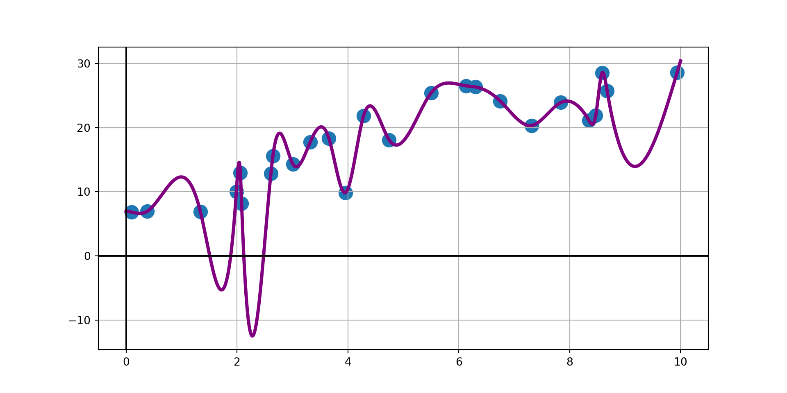
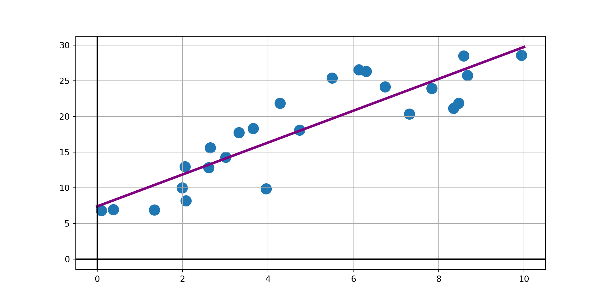

February 20, 2026
Often we must recognize that relationships are neither deterministic nor causal.
Noisy associations exist between one or more independent variables and a response.
In these cases, building an interpolant doesn’t make sense. Instead, we want to capture a general trend.


The interpolant is doing exactly what its designed to do – pass through every observed data point exactly, but that forces unsupported variability (even with using a cubic spline interpolant). We probably don’t realistically expect new data to follow the interpolant – the model on the right is more conservative, but likely more trustworthy.
With admittedly noisy data and noisy relationships, we want to build a model that captures a general trend between the availabile independent variables and our response.
That model should have a fairly simple form, otherwise we risk fitting the noise, which is unpredictable by definition.
Consider a function \(f\left(x\right) = f\left(x\mid \beta_0, \beta_1,\cdots,\beta_m\right)\) which has been fitted using \(n+1\) observed data points of the form \(\left(\vec{x}_i, y_i\right)\).
This function includes \(m+1\) parameters (\(\beta_0, \cdots, \beta_m\)), so \(m+1 \leq n+1\).
The observed points \(\left(\vec{x}_i, y_i\right)\) consist of measurements on independent variables which are contained in \(\vec{x}_i\) and a corresponding measured dependent response contained in \(y_i\).
Note that \(\vec{x}_i\) may consist of a single measured variable or many.
For example, if the data represent the displacements \(y_i\) of an overdamped mass-spring system at time \(t\), then the observations are of the form \(\left(t_i, y_i\right)\) and the form of the model suggested by theory is \(\displaystyle{f\left(t\right) = a_0te^{-a_1t}}\).
In general, parameters for a fitted model are obtained by minimizing a loss function.
If we are willing to assume that the noise is a feature of the response variable only (and the measurements on the independent variable(s) are to be trusted), then the most common loss function is the Sum of Squared Errors:
\[L\left(\beta_0, \beta_1,\cdots,\beta_m\right) = \sum_{i=0}^{n}{\left[y_i - f\left(x_i\right)\right]^2}\]
Models fit by minimizing the loss function above are said to be fit using Ordinary Least Squares (OLS).
The values of the \(\beta\)-parameters minimizing any Loss Function will satisfy the simultaneous system:
\[\left\{\frac{\partial L}{\partial \beta_j} = 0,~~\text{for}~~ j = 0, 1,\cdots, m\right.\]
Depending on the form of the model \(f\left(x\right)\) the equations in the system above may be non-linear and difficult to solve.
It is common to choose \(f\left(x\right)\) to be a linear combination of base functions \(f_i\left(x\right)\) so that
\[f\left(x\right) = \beta_0f_0\left(x\right) + \beta_1f_1\left(x\right) + \cdots + \beta_mf_m\left(x\right)\]
Doing this forces the simultaneous system to be linear in the \(\beta_i\) values.
As an example, if the fitted function is to be a polynomial, then we have \(f_0\left(x\right) = 1\), \(f_1\left(x\right) = x\), \(f_2\left(x\right) = x^2\), and so on. Resulting in
\[f\left(x\right) = \beta_0 + \beta_1x + \beta_2x^2 + \cdots + \beta_mx^m\]
Because we seek to capture a general trend, we know that the fitted model will not pass through all of the observed data points.
We can define the standard error of the model residuals (prediction errors) to be
\[s_E = \sqrt{\left(\frac{L}{n - m}\right)}\]
where \(L\) denotes the loss of the fitted function over all the observed data.
If \(n+1 = m+1\) (if there is a parameter for every observation) then the model is an interpolant and the \(s_E\) is undefined since it takes a “zero over zero” form.
A simple linear regression model is a model of the form \(f\left(x\right) = \beta_0 + \beta_1x\) which is fit to observed data of the form \(\left(x_i, y_i\right)\) by minimizing the sum of squared residuals.
In this case we can analyze our Loss function as follows:
\[\begin{align*} L\left(\beta_0, \beta_1\right) &= \sum_{i = 0}^{n}{\left[y_i - f\left(x_i\right)\right]^2} \end{align*}\]
A simple linear regression model is a model of the form \(f\left(x\right) = \beta_0 + \beta_1x\) which is fit to observed data of the form \(\left(x_i, y_i\right)\) by minimizing the sum of squared residuals.
In this case we can analyze our Loss function as follows:
\[\begin{align*} L\left(\beta_0, \beta_1\right) &= \sum_{i = 0}^{n}{\left[y_i - f\left(x_i\right)\right]^2}\\ &= \sum_{i = 0}^{n}{\left[y_i - \beta_0 - \beta_1x_i\right]^2} \end{align*}\]
We can minimize \(L\left(\beta_0, \beta_1\right)\) by solving the system:
\[\left\{\begin{array}{lcl} \frac{\partial L}{\partial \beta_0} & = & 0\\ \frac{\partial L}{\partial \beta_1} & = & 0\end{array}\right.\]
\[\implies \left\{\begin{array}{lcl} \sum{-2\left(y_i - \beta_0 - \beta_1x_i\right)} & = & 0\\ \sum{-2x_i\left(y_i - \beta_0 - \beta_1x_i\right)} & = & 0\end{array}\right.\]
A simple linear regression model is a model of the form \(f\left(x\right) = \beta_0 + \beta_1x\) which is fit to observed data of the form \(\left(x_i, y_i\right)\) by minimizing the sum of squared residuals.
In this case we can analyze our Loss function as follows:
\[\begin{align*} L\left(\beta_0, \beta_1\right) &= \sum_{i = 0}^{n}{\left[y_i - f\left(x_i\right)\right]^2}\\ &= \sum_{i = 0}^{n}{\left[y_i - \beta_0 - \beta_1x_i\right]^2} \end{align*}\]
We can minimize \(L\left(\beta_0, \beta_1\right)\) by solving the system:
\[\left\{\begin{array}{lcl} \frac{\partial L}{\partial \beta_0} & = & 0\\ \frac{\partial L}{\partial \beta_1} & = & 0\end{array}\right.\]
\[\implies \left\{\begin{array}{lcl} \sum{-2\left(y_i - \beta_0 - \beta_1x_i\right)} & = & 0\\ \sum{-2x_i\left(y_i - \beta_0 - \beta_1x_i\right)} & = & 0\end{array}\right.\] \[\implies \left\{\begin{array}{lcl} \sum{\left(y_i - \beta_0 - \beta_1x_i\right)} & = & 0\\ \sum{\left(x_iy_i - \beta_0x_i - \beta_1x_i^2\right)} & = & 0\end{array}\right.\]
A simple linear regression model is a model of the form \(f\left(x\right) = \beta_0 + \beta_1x\) which is fit to observed data of the form \(\left(x_i, y_i\right)\) by minimizing the sum of squared residuals.
In this case we can analyze our Loss function as follows:
\[\begin{align*} L\left(\beta_0, \beta_1\right) &= \sum_{i = 0}^{n}{\left[y_i - f\left(x_i\right)\right]^2}\\ &= \sum_{i = 0}^{n}{\left[y_i - \beta_0 - \beta_1x_i\right]^2} \end{align*}\]
We can minimize \(L\left(\beta_0, \beta_1\right)\) by solving the system:
\[\left\{\begin{array}{lcl} \frac{\partial L}{\partial \beta_0} & = & 0\\ \frac{\partial L}{\partial \beta_1} & = & 0\end{array}\right.\]
\[\implies \left\{\begin{array}{lcl} \sum{-2\left(y_i - \beta_0 - \beta_1x_i\right)} & = & 0\\ \sum{-2x_i\left(y_i - \beta_0 - \beta_1x_i\right)} & = & 0\end{array}\right.\] \[\implies \left\{\begin{array}{lcl} \sum{\left(y_i - \beta_0 - \beta_1x_i\right)} & = & 0\\ \sum{\left(x_iy_i - \beta_0x_i - \beta_1x_i^2\right)} & = & 0\end{array}\right.\] \[\implies \left\{\begin{array}{lcl} \sum{\left(\frac{y_i}{n+1} - \frac{\beta_0}{n+1} - \frac{\beta_1x_i}{n+1}\right)} & = & 0\\ \sum{\left(\frac{x_iy_i}{n+1} - \frac{\beta_0x_i}{n+1} - \frac{\beta_1x_i^2}{n+1}\right)} & = & 0\end{array}\right.\]
A simple linear regression model is a model of the form \(f\left(x\right) = \beta_0 + \beta_1x\) which is fit to observed data of the form \(\left(x_i, y_i\right)\) by minimizing the sum of squared residuals.
In this case we can analyze our Loss function as follows:
\[\begin{align*} L\left(\beta_0, \beta_1\right) &= \sum_{i = 0}^{n}{\left[y_i - f\left(x_i\right)\right]^2}\\ &= \sum_{i = 0}^{n}{\left[y_i - \beta_0 - \beta_1x_i\right]^2} \end{align*}\]
We can minimize \(L\left(\beta_0, \beta_1\right)\) by solving the system:
\[\left\{\begin{array}{lcl} \frac{\partial L}{\partial \beta_0} & = & 0\\ \frac{\partial L}{\partial \beta_1} & = & 0\end{array}\right.\]
The top equation in the last line to the right indicates that \(\beta_0 = \bar{y} - \beta_1\bar{x}\).
\[\implies \left\{\begin{array}{lcl} \sum{-2\left(y_i - \beta_0 - \beta_1x_i\right)} & = & 0\\ \sum{-2x_i\left(y_i - \beta_0 - \beta_1x_i\right)} & = & 0\end{array}\right.\] \[\implies \left\{\begin{array}{lcl} \sum{\left(y_i - \beta_0 - \beta_1x_i\right)} & = & 0\\ \sum{\left(x_iy_i - \beta_0x_i - \beta_1x_i^2\right)} & = & 0\end{array}\right.\] \[\implies \left\{\begin{array}{lcl} \sum{\left(\frac{y_i}{n+1} - \frac{\beta_0}{n+1} - \frac{\beta_1x_i}{n+1}\right)} & = & 0\\ \sum{\left(\frac{x_iy_i}{n+1} - \frac{\beta_0x_i}{n+1} - \frac{\beta_1x_i^2}{n+1}\right)} & = & 0\end{array}\right.\] \[\implies \left\{\begin{array}{lcl} \bar{y} - \beta_0 - \beta_1\bar{x} & = & 0\\ - \beta_0\bar{x} + \sum{\left(\frac{x_iy_i}{n+1} - \frac{\beta_1x_i^2}{n+1}\right)} & = & 0\end{array}\right.\]
We can substitute this into the bottom equation and use some algebra to arrive at \(\displaystyle{\beta_1 = \frac{\sum{y_i\left(x_i - \bar{x}\right)}}{\sum{x_i\left(x_i - \bar{x}\right)}}}\). (\(\bigstar\) – the algebra required is included at the end of this slide deck for those interested)
Consider the least-squares fit
\[\begin{align*}f\left(x\right) &= \beta_0f_0\left(x\right) + \beta_1f_1\left(x\right) + \beta_2f_2\left(x\right) + \cdots + \beta_mf_m\left(x\right)\\ &= \sum_{j=0}^{m}{\beta_j f_j\left(x\right)} \end{align*}\]
Substituting this into our least squares loss function gives
\[L\left(\beta_0, \beta_1, \cdots, \beta_m\right) = \sum_{i=0}^{n}\left[y_i - \sum_{j=0}^{m}{\beta_j f_j\left(x_i\right)}\right]^2\]
Which is minimized by the solution to the following linear system:
\[\left\{\frac{\partial L}{\partial \beta_k} = -2\left(\sum_{i=0}^{n}{\left(\left(y_i - \sum_{j = 0}^{m}{\left(\beta_j f_j\left(x_i\right)\right)}\right)f_k\left(x_i\right)\right)}\right) = 0\right.~~\text{for}~~k = 0, 1, \cdots, m\]
As a reminder, we are minimizing
\[\left\{\frac{\partial L}{\partial \beta_k} = -2\left(\sum_{i=0}^{n}{\left(\left(y_i - \sum_{j = 0}^{m}{\left(\beta_j f_j\left(x_i\right)\right)}\right)f_k\left(x_i\right)\right)}\right) = 0\right.~~\text{for}~~k = 0, 1, \cdots, m\]
We can divide both sides of each equation in the system by \(-2\) and rearrange the summations.
\[\begin{align*}\left\{\left(\sum_{i=0}^{n}{\left(\left(y_i - \sum_{j = 0}^{m}{\left(\beta_j f_j\left(x_i\right)\right)}\right)f_k\left(x_i\right)\right)}\right)\right. &= 0 \end{align*}\]
As a reminder, we are minimizing
\[\left\{\frac{\partial L}{\partial \beta_k} = -2\left(\sum_{i=0}^{n}{\left(\left(y_i - \sum_{j = 0}^{m}{\left(\beta_j f_j\left(x_i\right)\right)}\right)f_k\left(x_i\right)\right)}\right) = 0\right.~~\text{for}~~k = 0, 1, \cdots, m\]
We can divide both sides of each equation in the system by \(-2\) and rearrange the summations.
\[\begin{align*}\left\{\left(\sum_{i=0}^{n}{\left(\left(y_i - \sum_{j = 0}^{m}{\left(\beta_j f_j\left(x_i\right)\right)}\right)f_k\left(x_i\right)\right)}\right)\right. &= 0\\ \implies \left\{\sum_{i=0}^{n}{\left(y_if_k\left(x_i\right) - \sum_{j = 0}^{m}{\left(\beta_j f_j\left(x_i\right)f_k\left(x_i\right)\right)}\right)}\right. &= 0 \end{align*}\]
As a reminder, we are minimizing
\[\left\{\frac{\partial L}{\partial \beta_k} = -2\left(\sum_{i=0}^{n}{\left(\left(y_i - \sum_{j = 0}^{m}{\left(\beta_j f_j\left(x_i\right)\right)}\right)f_k\left(x_i\right)\right)}\right) = 0\right.~~\text{for}~~k = 0, 1, \cdots, m\]
We can divide both sides of each equation in the system by \(-2\) and rearrange the summations.
\[\begin{align*}\left\{\left(\sum_{i=0}^{n}{\left(\left(y_i - \sum_{j = 0}^{m}{\left(\beta_j f_j\left(x_i\right)\right)}\right)f_k\left(x_i\right)\right)}\right)\right. &= 0\\ \implies \left\{\sum_{i=0}^{n}{\left(y_if_k\left(x_i\right) - \sum_{j = 0}^{m}{\left(\beta_j f_j\left(x_i\right)f_k\left(x_i\right)\right)}\right)}\right. &= 0\\ \implies \left\{\sum_{i=0}^{n}{\left(y_if_k\left(x_i\right)\right)} - \sum_{i=0}^{n}{\left(\sum_{j = 0}^{m}{\left(\beta_j f_j\left(x_i\right)f_k\left(x_i\right)\right)}\right)}\right. &= 0 \end{align*}\]
As a reminder, we are minimizing
\[\left\{\frac{\partial L}{\partial \beta_k} = -2\left(\sum_{i=0}^{n}{\left(\left(y_i - \sum_{j = 0}^{m}{\left(\beta_j f_j\left(x_i\right)\right)}\right)f_k\left(x_i\right)\right)}\right) = 0\right.~~\text{for}~~k = 0, 1, \cdots, m\]
We can divide both sides of each equation in the system by \(-2\) and rearrange the summations.
\[\begin{align*}\left\{\left(\sum_{i=0}^{n}{\left(\left(y_i - \sum_{j = 0}^{m}{\left(\beta_j f_j\left(x_i\right)\right)}\right)f_k\left(x_i\right)\right)}\right)\right. &= 0\\ \implies \left\{\sum_{i=0}^{n}{\left(y_if_k\left(x_i\right) - \sum_{j = 0}^{m}{\left(\beta_j f_j\left(x_i\right)f_k\left(x_i\right)\right)}\right)}\right. &= 0\\ \implies \left\{\sum_{i=0}^{n}{\left(y_if_k\left(x_i\right)\right)} - \sum_{i=0}^{n}{\left(\sum_{j = 0}^{m}{\left(\beta_j f_j\left(x_i\right)f_k\left(x_i\right)\right)}\right)}\right. &= 0\\ \implies \left\{\sum_{i=0}^{n}{\left(\sum_{j = 0}^{m}{\left(\beta_j f_j\left(x_i\right)f_k\left(x_i\right)\right)}\right)}\right. &= \sum_{i=0}^{n}{\left(y_if_k\left(x_i\right)\right)} \end{align*}\]
As a reminder, we are minimizing
\[\left\{\frac{\partial L}{\partial \beta_k} = -2\left(\sum_{i=0}^{n}{\left(\left(y_i - \sum_{j = 0}^{m}{\left(\beta_j f_j\left(x_i\right)\right)}\right)f_k\left(x_i\right)\right)}\right) = 0\right.~~\text{for}~~k = 0, 1, \cdots, m\]
We can divide both sides of each equation in the system by \(-2\) and rearrange the summations.
\[\begin{align*}\left\{\left(\sum_{i=0}^{n}{\left(\left(y_i - \sum_{j = 0}^{m}{\left(\beta_j f_j\left(x_i\right)\right)}\right)f_k\left(x_i\right)\right)}\right)\right. &= 0\\ \implies \left\{\sum_{i=0}^{n}{\left(y_if_k\left(x_i\right) - \sum_{j = 0}^{m}{\left(\beta_j f_j\left(x_i\right)f_k\left(x_i\right)\right)}\right)}\right. &= 0\\ \implies \left\{\sum_{i=0}^{n}{\left(y_if_k\left(x_i\right)\right)} - \sum_{i=0}^{n}{\left(\sum_{j = 0}^{m}{\left(\beta_j f_j\left(x_i\right)f_k\left(x_i\right)\right)}\right)}\right. &= 0\\ \implies \left\{\sum_{i=0}^{n}{\left(\sum_{j = 0}^{m}{\left(\beta_j f_j\left(x_i\right)f_k\left(x_i\right)\right)}\right)}\right. &= \sum_{i=0}^{n}{\left(y_if_k\left(x_i\right)\right)} \end{align*}\]
\[\begin{align*} \implies \left\{\sum_{j=0}^{m}{\left(\sum_{i = 0}^{n}{\left(\beta_j f_j\left(x_i\right)f_k\left(x_i\right)\right)}\right)}\right. &= \sum_{i=0}^{n}{\left(y_if_k\left(x_i\right)\right)} \end{align*}\]
As a reminder, we are minimizing
\[\left\{\frac{\partial L}{\partial \beta_k} = -2\left(\sum_{i=0}^{n}{\left(\left(y_i - \sum_{j = 0}^{m}{\left(\beta_j f_j\left(x_i\right)\right)}\right)f_k\left(x_i\right)\right)}\right) = 0\right.~~\text{for}~~k = 0, 1, \cdots, m\]
We can divide both sides of each equation in the system by \(-2\) and rearrange the summations.
\[\begin{align*}\left\{\left(\sum_{i=0}^{n}{\left(\left(y_i - \sum_{j = 0}^{m}{\left(\beta_j f_j\left(x_i\right)\right)}\right)f_k\left(x_i\right)\right)}\right)\right. &= 0\\ \implies \left\{\sum_{i=0}^{n}{\left(y_if_k\left(x_i\right) - \sum_{j = 0}^{m}{\left(\beta_j f_j\left(x_i\right)f_k\left(x_i\right)\right)}\right)}\right. &= 0\\ \implies \left\{\sum_{i=0}^{n}{\left(y_if_k\left(x_i\right)\right)} - \sum_{i=0}^{n}{\left(\sum_{j = 0}^{m}{\left(\beta_j f_j\left(x_i\right)f_k\left(x_i\right)\right)}\right)}\right. &= 0\\ \implies \left\{\sum_{i=0}^{n}{\left(\sum_{j = 0}^{m}{\left(\beta_j f_j\left(x_i\right)f_k\left(x_i\right)\right)}\right)}\right. &= \sum_{i=0}^{n}{\left(y_if_k\left(x_i\right)\right)} \end{align*}\]
\[\begin{align*} \implies \left\{\sum_{j=0}^{m}{\left(\sum_{i = 0}^{n}{\left(\beta_j f_j\left(x_i\right)f_k\left(x_i\right)\right)}\right)}\right. &= \sum_{i=0}^{n}{\left(y_if_k\left(x_i\right)\right)}\\ \implies \left\{\sum_{j=0}^{m}{\left(\sum_{i = 0}^{n}{\left(f_j\left(x_i\right)f_k\left(x_i\right)\right)\beta_j}\right)}\right. &= \sum_{i=0}^{n}{\left(f_k\left(x_i\right)y_i\right)}~~\text{for}~~k = 0, 1, \cdots, m\\ \end{align*}\]
\[\begin{align*}\left\{\left(\sum_{i=0}^{n}{\left(\left(y_i - \sum_{j = 0}^{m}{\left(\beta_j f_j\left(x_i\right)\right)}\right)f_k\left(x_i\right)\right)}\right)\right. &= 0\\ \implies \left\{\sum_{i=0}^{n}{\left(y_if_k\left(x_i\right) - \sum_{j = 0}^{m}{\left(\beta_j f_j\left(x_i\right)f_k\left(x_i\right)\right)}\right)}\right. &= 0\\ \implies \left\{\sum_{i=0}^{n}{\left(y_if_k\left(x_i\right)\right)} - \sum_{i=0}^{n}{\left(\sum_{j = 0}^{m}{\left(\beta_j f_j\left(x_i\right)f_k\left(x_i\right)\right)}\right)}\right. &= 0\\ \implies \left\{\sum_{i=0}^{n}{\left(\sum_{j = 0}^{m}{\left(\beta_j f_j\left(x_i\right)f_k\left(x_i\right)\right)}\right)}\right. &= \sum_{i=0}^{n}{\left(y_if_k\left(x_i\right)\right)} \end{align*}\]
\[\begin{align*} \implies \left\{\sum_{j=0}^{m}{\left(\sum_{i = 0}^{n}{\left(\beta_j f_j\left(x_i\right)f_k\left(x_i\right)\right)}\right)}\right. &= \sum_{i=0}^{n}{\left(y_if_k\left(x_i\right)\right)}\\ \implies \left\{\sum_{j=0}^{m}{\left(\sum_{i = 0}^{n}{\left(f_j\left(x_i\right)f_k\left(x_i\right)\right)\beta_j}\right)}\right. &= \sum_{i=0}^{n}{\left(f_k\left(x_i\right)y_i\right)}~~\text{for}~~k = 0, 1, \cdots, m\\ \end{align*}\]
We can rewrite the above using matrix notation as \(A\vec{\beta} = \vec{b}\), where
\[A_{kj} = \sum_{i = 0}^{n}{f_j\left(x_i\right)f_k\left(x_i\right)}~~~~\text{and}~~~~b_k = \sum_{i=0}^{n}{f_k\left(x_i\right)y_i}\]
These equations are known as the normal equations of the least-squares fit, and can be solved using our numerical methods for solving [symmetric] linear systems!
We can rewrite the above using matrix notation as \(A\vec{\beta} = \vec{b}\), where
\[A_{kj} = \sum_{i = 0}^{n}{f_j\left(x_i\right)f_k\left(x_i\right)}~~~~\text{and}~~~~b_k = \sum_{i=0}^{n}{f_k\left(x_i\right)y_i}\]
These equations are known as the normal equations of the least-squares fit, and can be solved using our numerical methods for solving [symmetric] linear systems!
As mentioned earlier, a commonly used linear form is a polynomial.
In this case, the basis functions are \(f_j\left(x\right) = x^j\).
This leads to the following \(A\) and \(\vec{b}\) from the normal equations above:
\[A_{kj} = \sum_{i = 0}^{n}{x_i^{j+k}}~~~~\text{and}~~~~b_k = \sum_{i=0}^{n}{x_i^ky_i}\]
The coefficient matrix \(A\) becomes increasingly ill-conditioned as \(m\) is made larger.
Luckily, high-degree polynomials are typically not used in curve-fitting since they are very susceptible to fitting the noise in the observed data.
With all of that math understood, we are ready to construct a routine to fit least-squares polynomial models.
Since we need to solve symmetric linear systems as part of solving the normal equations, we’ll need access to functionality from earlier in our course.
As a reminder, you make this older functionality available in a new notebook by pasting it into a code cell at the top of your notebook and running that code cell.
Because observed data can come in any order, we should be worried about when to pivot as we solve our linear system. For this reason, we’ll bring in the swapRows(), scaleFactors(), and gaussPivot() functions from our Day 7 dicussion.
I’ve already enabled them in this slide deck, for convenience. I won’t show the pasting here.
With those earlier functions available to us, we’ll write our polyFit() routine.
This routine will return the coefficients of a linear model of the form
\[f\left(x\right) = \beta_0 + \beta_1 x + \beta_2 x^2 + \cdots + \beta_m x^m\]
fit on training data of the form \(\left(x_i, y_i\right)\) with xData holding the \(x_i\) values an yData holding the \(y_i\) values.
The function will take one additional parameter, m, which is the degree of the polynomial model.
def polyFit(xData, yData, m):
A = np.zeros((m+1, m+1))
b = np.zeros(m+1)
s = np.zeros(2*m+1)
for i in range(len(xData)):
temp = yData[i]
for j in range(m+1):
b[j] = b[j] + temp
temp = temp*xData[i]
temp = 1.0
for j in range(2*m + 1):
s[j] = s[j] + temp
temp = temp*xData[i]
for i in range(m+1):
for j in range(m+1):
A[i, j] = s[i + j]
return gaussPivot(A, b)
def evalPoly(coefs, x):
m = len(coefs) - 1
p = coefs[m]
for j in range(m):
p = p*x + coefs[m - j - 1]
return p
def getStdError(xData, yData, coefs):
n = len(xData)
m = len(coefs)
sse = 0.0
for i in range(n):
y_hat = evalPoly(coefs, xData[i])
resid = yData[i] - y_hat
sse = sse + resid**2
stdError = (sse/(n - m))**0.5
return stdError
def plotPoly(xData, yData, coefs, num_pts = 100, xlab = "x", ylab = "y"):
m = len(coefs)
x1 = min(xData)
x2 = max(xData)
x_new = np.linspace(x1, x2, num_pts)
y_new = np.zeros(len(x_new))
for i in range(num_pts):
y_new[i] = evalPoly(coefs, x_new[i])
plt.scatter(xData, yData, color = "black", s = 150)
plt.plot(x_new, y_new, color = "purple", linewidth = 3)
plt.grid()
plt.axhline(color = "black")
plt.axvline(color = "black")
plt.xlabel(xlab)
plt.ylabel(ylab)
plt.title("A Polynomial Least Squares Fit of Degree " + str(m - 1), fontsize = 20)
plt.show()Example: Fit a second-order (quadratic) linear regression model to the observed data on the right.
| \(x\) | \(y\) |
|---|---|
| 4 | -4.35 |
| 10 | 29.15 |
| 0 | 31.64 |
| 9 | 37.23 |
| 6 | 12.27 |
| 5 | 8.20 |
We’ll pause here to encounter our first Unit Problem Set. This means that you’ll spend the next week working through several interesting applications which can be addressed using one or more of the methods we’ve encountered so far in our course.
Earlier in this notebook it was suggested that, after a bit of algebra, we could obtain \(\displaystyle{\beta_1 = \frac{\sum{y_i\left(x_i - \bar{x}\right)}}{\sum{x_i\left(x_i - \bar{x}\right)}}}\). The algebra required for that appears below. Recall that we have \(\beta_0 = \bar{y} - \beta_1\bar{x}\). From here we have
\[\begin{align*} -\beta_0\bar{x} + \sum{\left(\frac{x_iy_i}{n+1} - \frac{\beta_1x_i^2}{n+1}\right)} &= 0\\ \implies -\left(\bar{y} - \beta_1 \bar{x}\right)\bar{x} + \sum{\left(\frac{x_iy_i}{n+1} - \frac{\beta_1x_i^2}{n+1}\right)} &= 0\\ \implies -\bar{x}\bar{y} + \beta_1\bar{x}^2 + \sum{\frac{x_iy_i}{n+1}} - \beta_1\sum{\frac{x_i^2}{n+1}} &= 0\\ \implies \beta_1\sum{\frac{x_i^2}{n+1}} - \beta_1\bar{x}^2 &= \sum{\frac{x_iy_i}{n+1}} - \bar{x}\bar{y} \\ \implies \beta_1\left(\sum{\frac{x_i^2}{n+1}} - \left(\sum{\frac{x_i}{n+1}}\right)^2\right) &= \sum{\frac{x_iy_i}{n+1}} - \left(\sum{\frac{x_i}{n+1}}\right)\left(\sum{\frac{y_i}{n+1}}\right)\\ \implies \beta_1\left(\sum{\frac{x_i^2}{n+1}} - \left(\sum{\frac{x_i}{n+1}}\right)\left(\sum{\frac{x_i}{n+1}}\right)\right) &= \sum{\frac{x_iy_i}{n+1}} - \left(\sum{\frac{x_i}{n+1}}\right)\left(\sum{\frac{y_i}{n+1}}\right)\\ \implies \beta_1\left(\sum{\left(\frac{x_i}{n+1}\left(x_i - \sum{\frac{x_i}{n+1}}\right)\right)}\right) &= \sum{\left(\frac{y_i}{n+1}\left(x_i - \sum{\frac{x_i}{n+1}}\right)\right)}\\ \implies \beta_1\sum{\left(\frac{x_i}{n+1}\left(x_i - \bar{x}\right)\right)} &= \sum{\left(\frac{y_i}{n+1}\left(x_i - \bar{x}\right)\right)}\\ \implies \beta_1\sum{x_i\left(x_i - \bar{x}\right)} &= \sum{y_i\left(x_i - \bar{x}\right)}\\ \implies \beta_1 &= \frac{\sum{y_i\left(x_i - \bar{x}\right)}}{\sum{x_i\left(x_i - \bar{x}\right)}}~~\checkmark \end{align*}\]
Comments on the Functionality
The previous slide gave your four new functions that are useful for least squares regression (curve fitting) applications. You’ll directly use all of them.
polyFit()function takes in the observed data and the desired degree of the polynomial model and returns the fitted coefficients as solutions to the normal equations.evalPoly()function allows you to evaluate your fitted polynomial for new observations. That is, this is the function that allows you to make predictions.getStdError()function computes the standard error of residuals. This is a measure of model performance. Smaller indicates a better fit, but you should be guided by held out test data here rather than reusing your training data. Take MAT300 to find out why.plotPoly()function is a convenience function that will handle plotting your training data and fitted polynomial model for you.